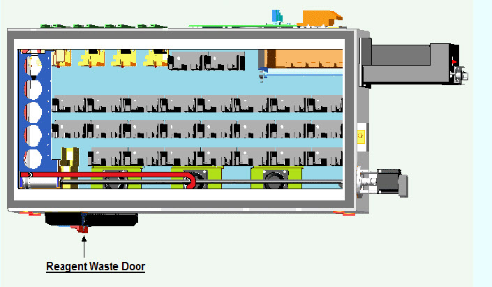
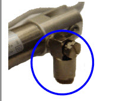
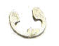
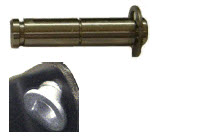
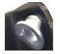
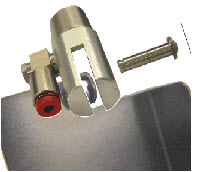
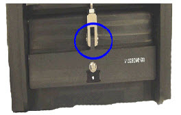
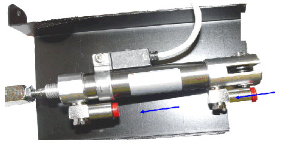

This procedure describes how to replace the air cylinder on the reagent waste door.
Required Materials:
Air cylinder with sensor
Tie-wraps, 5-3/8-in (nine)
Screw driver, flat head
Scissors
Wrench, 5/16-in open end
Perform this procedure when replacing the reagent waste door air cylinder.
Warning: This procedure requires work in the Solid Waste area, which contains hazardous waste materials. Wear appropriate PPE as required: Lab coat, gloves, and goggles.
Figure 357: Figure A: Reagent storage module

Note:
Figure 358: Figure B: Reagent waste door and air cylinder
Place the reagent storage module on a counter or table.
Caution: When placing the removed reagent storage module on a counter or table, do not damage the connection wires, circuit board, or motor and encoder assemblies.
Locate the air cylinder for the reagent waste door under the storage.
Remove the reagent waste door air cylinder.
Remove the air pressure tubing from the air flow fittings on the cylinder and label the tubing.
Refer to Figure B, and label the left tubing A and the right tubing B.
Caution: Do not stretch, kink, or damage the air pressure tubing when removing the tubing from the air flow fittings. The air pressure tubing is reused.
Use the 5/16-in open-end wrench to loosen air flow fitting B to provide access to the E-clip and holding pin behind and at the bottom of the cylinder.

Use the flat-head screw driver to remove the top E-clip that is attached to the rear holding pin.
Caution: To avoid injury or losing the E-clip, do not let the E-clip fly out when removing it from the air cylinder holding pin.
Note: Do not lose the E-clip. It is reused.

Remove the rear holding pin and the bushing-clip.
Note: Do not lose the bushing-clip. It is reused.

Use the flat-head screw driver to remove the top E-clip that is attached to the front holding pin on the cylinder.
Caution: To avoid injury or losing the E-clip, do not let the E-clip fly out when removing it from the air cylinder holding pin.
Note: Do not lose the E-clip. It is reused.
Remove the front holding pin.
Hold the sensor wire and air pressure tubing on the reagent storage module, and cut all nine tie-wraps.
Caution: Do not cut or damage the air pressure tubing when cutting the tie-wraps. The tubing is reused.
Remove the reagent waste door sensor connector from the J22 connection on the reagent interface PCB.
Position the air cylinder on the disposal mount or bracket.
Insert the bushing-clip into the disposal mount or bracket.

Insert the rear holding pin into the cylinder.
Note: The rear holding pin is longer than front holding pin.

Place the E-clip to the rear holding pin.
Insert the front holding pin into the cylinder.
Note: The front holding pin is shorter than the rear holding pin.
Place the E-clip to the front holding pin.

Check the cylinder to make sure it is fastened into place.
Check the air flow fittings to make sure they are tight and that they point in parallel to the cylinder.
Note: If the air flow fittings are loose, use the 5/16-in open-end wrench to tighten the fittings. The arrows in the figure indicate the air flow fittings are pointing in parallel to the cylinder.

To test the waste door and confirm that the cylinder is holding tight to the door, pull the door to open it and push the door close it.
Check the air pressure tubing before inserting it into the air flow fittings. If the tubing is torn or kinked, replace it.
Insert the air pressure tubing into the air flow fittings.
Use the nine tie-wraps to tie the air pressure tubing and sensor wire to the reagent storage module.
Caution: To avoid pinching the air pressure tubing and blocking the air flow to the cylinder, do not over-tighten the tie-wraps.
Connect the reagent waste door sensor connector to the J22 connection on the reagent interface PCB.